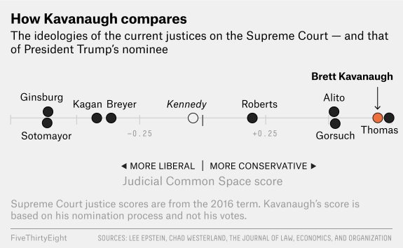
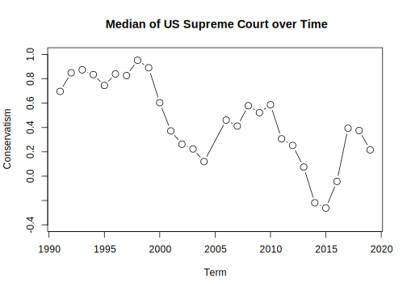
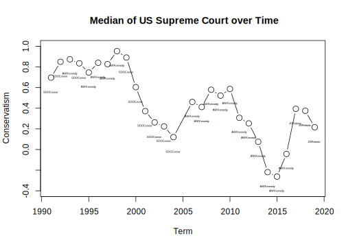
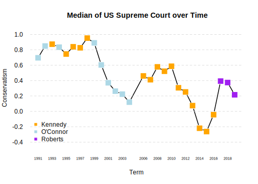

6.2 Application: U.S. Supreme Court
The Court has changed a lot recently in its composition.


Ideology on the U.S. Supreme Court: With Kennedy out, Kavanaugh in, did the Court have a Conservative shift?
Many people predicted it would. See this FiveThirtyEight article as an example. The graph from the article shows Kavanaugh’s predicted ideology.


We will explore how he changed the Court, with a focus on how the location of the median U.S. Supreme Court Justice shifted over time.
Why does the median matter? A refresher on the Court
- President nominates the justice. Senate must confirm.
- Justices serve lifetime appointments.
- Trump nominated Gorsuch, following Scalia death, confirmed 2017.
- Trump nominated Kavanaugh, following Kennedy retirement, confirmed 2018.
- The Court typically has 9 justices, so whichever justice is the median in terms of ideology, can act as the “swing” vote in cases where the Court is divided
- Anthony Kennedy was often the “swing” justice for a decade.
- With Kennedy out, the prediction is that the Court would return to similar balance as when O’Connor was the median.
- In 2020, Amy Coney Barrett confirmed to Court, likely shifting the Court again. We can continue to update the data to examine what happened.
Let’s load and explore our data.
term: is the year of the SC (1991-2019 except for 2005),justiceName: contains the name of the Justice, and
post_mn: includes the “ideal point”– this is the estimated ideology
Martin-Quinn Scores assess ideology based on how judges “cluster” together in their voting patterns. Every Justice gets an ideology score, and this score can change each SC term (year) they are on the Court. Higher scores are more conservative justices, and lower, more liberal. More information is available at the MQScores website
justices <- read.csv("justices.csv", stringsAsFactors = T)
## alternative
justices <- read.csv("https://raw.githubusercontent.com/ktmccabe/teachingdata/main/justices.csv", stringsAsFactors = T)We are going to make the name variable a character class. This will make R treat the names as raw text rather than valued categories. This will be useful later on in the application.
## justice Name as character
justices$justiceName <- as.character(justices$justiceName)We can use tapply() to see the median “ideal point” (ideology score) each term in our data.
## Note: we use tapply like before but replace mean with median
medians <- tapply(justices$post_mn, justices$term, median)
plot(x =names(medians),
y= medians,
ylim = c(-.4, 1),
type = "b",
cex=1.5,
ylab="Conservatism",
xlab="Term",
main="Median of US Supreme Court over Time")
We see a conservative shift at the end of the plot. However, we cannot tell whether this represents a shift within a particular justice’s ideology or a shift in which justice has become the median, due perhaps, to the change in the Court’s composition.
We need to find which justice is the median!
Loops to the rescue!
We will start our process by definding the meat of the operation.
- We want to find the median SC Justice for each term. To get started, let’s pretend we only have to find the median Supreme Court Justice for one term.
SCterms <- sort(unique(justices$term))
SCterms## [1] 1991 1992 1993 1994 1995 1996 1997 1998 1999 2000 2001 2002 2003 2004 2006
## [16] 2007 2008 2009 2010 2011 2012 2013 2014 2015 2016 2017 2018 2019Note that where you have a vector where some entries in the vector are repeated (such as terms on the Supreme Court), you can extract the unique elements of that vector using the unique() function. You can also sort() them in numeric or alphabetical order. This won’t be necessary most times.
First, let’s think about how we would do this for just one of the Supreme Court terms. Well we would first subset our data frame to contain only that one Supreme Court term.
## Example for the first term
SCterms[1]## [1] 1991## Subset data to include only rows from 1991
subterm <- subset(justices, term == 1991)Then, we would take the median of these ideal points
median.ip <- median(subterm$post_mn)Finally, we would figure out which justice has this median.
result <- subterm$justiceName[subterm$post_mn == median.ip]
result## [1] "SDOConnor"Now let’s put it into our loop syntax
# for(i in . . . ){
# subterm <- subset(justices, term == 1991)
# median.ip <- median(subterm$post_mn)
# result <- subterm$justiceName[subterm$post_mn == median.ip]
#}Now, we need our container vector and iteration vectors.
SCterms <- sort(unique(justices$term))
results <- rep(NA, length(SCterms))
names(results) <- SCtermsFinally, we would modify our loop syntax with i and [i]
for(i in 1:length(SCterms)){
subterm <- subset(justices, term == SCterms[i])
median.ip <- median(subterm$post_mn)
results[i] <- subterm$justiceName[subterm$post_mn == median.ip]
}Did it work?
results## 1991 1992 1993 1994 1995 1996
## "SDOConnor" "SDOConnor" "AMKennedy" "SDOConnor" "AMKennedy" "AMKennedy"
## 1997 1998 1999 2000 2001 2002
## "AMKennedy" "AMKennedy" "SDOConnor" "SDOConnor" "SDOConnor" "SDOConnor"
## 2003 2004 2006 2007 2008 2009
## "SDOConnor" "SDOConnor" "AMKennedy" "AMKennedy" "AMKennedy" "AMKennedy"
## 2010 2011 2012 2013 2014 2015
## "AMKennedy" "AMKennedy" "AMKennedy" "AMKennedy" "AMKennedy" "AMKennedy"
## 2016 2017 2018 2019
## "AMKennedy" "JGRoberts" "JGRoberts" "JGRoberts"6.2.1 Troubleshooting the loop
Recall, the inside part of the loop should run if we set i to a particular value.
i <- 1
subterm <- subset(justices, term == SCterms[i])
median.ip <- median(subterm$post_mn)
results[i] <- subterm$justiceName[subterm$post_mn == median.ip]
results[i]## 1991
## "SDOConnor"We are in good shape! If we had a typo, we’d get an error message there, and that would be a sign that we need to work on the inside part of the code before putting it back into the loop structure.
6.2.2 Visualizing the Results
To get a bit more practice with plots, let’s visualize the results and make our interpretations.
medians <- tapply(justices$post_mn, justices$term, median)
plot(x =names(medians),
y= medians,
ylim = c(-.4, 1),
type = "b",
cex=1.5,
ylab="Conservatism",
xlab="Term",
main="Median of US Supreme Court over Time")
## Add the names to the plot
## Note: we want to make sure medians and results are in the same order for this to work
text(x=names(results), y=(medians - .14), labels=results, cex=.35)
We have now used the text() function. Similar to plot, the text() takes a set of x and y coordinates that tells R the location of where you want to add a piece(s) of text to the plot. The third input is the actual text.
Why did the Court shift more conservative at the end of the time trend?
- Well we see that Justice Roberts became the median!
As FiveThirtyEight notes, just because Justice Roberts is the new median, does not mean he has become more liberal. The Court composition is shifting, and the MQ scores also depend on the issues being heard before the Court.

Recall, the Martin-Quinn scores measure justice ideology based on voting patterns. What are the strengths and weaknesses of using this type of information to score the ideology of a justice?
6.2.3 Enhancing the plot
Let’s make the plot more beautiful by color coding.
medians <- tapply(justices$post_mn, justices$term, median)
plot(x =names(medians),
y= medians,
ylim = c(-.4, 1),
type = "b",
ylab="Conservatism",
xlab="Term",
main="Median of US Supreme Court over Time",
xaxt="n", ## removes the x-axis
las=1)
## Adds text
text(x=names(results), y=(medians - .14), results, cex=.35)
## Adds color-coded points on top of existing points
points(x =names(medians),
y= medians,
## Adds colors according to how results is coded
col= ifelse(results == "AMKennedy", "orange",
ifelse(results =="SDOConnor", "light blue",
"purple")),
pch=15, # point type- squares
cex=1.5) # size of points
## Adds custom x-axis at the specific years included in names(medians)
axis(1, names(medians), cex.axis=.6)
We have used the points() function. This adds an additional layer of points to a plot. It works much like the plot function in that in takes a set of x and y coordinates.
We could change the look of the plot even more by adding a legend and altering the borders and look of the plot.
medians <- tapply(justices$post_mn, justices$term, median)
plot(x =names(medians),
y= medians,
ylim = c(-.4, 1),
type = "b",
ylab="Conservatism",
xlab="Term",
main="Median of US Supreme Court over Time",
xaxt="n", # removes x axis
las=1, # changes the orientation of the axis labels
lwd=2, # increases the thickness of the lines
tick=F, # removes the tick marks from the axis
bty="n") # removes the plot border
## adds horizontal dashed gray lines
abline(h=seq(-.4, 1, .2), lty=2, col="light gray")
## Adds a legend
legend("bottomleft", pch=15, col = c("orange", "light blue", "purple"),
c("Kennedy", "O'Connor", "Roberts"), bty="n")
## Adds the color-coded points
points(x =names(medians), y= medians,
col= ifelse(results == "AMKennedy", "orange",
ifelse(results =="SDOConnor", "light blue", "purple")),
pch=15, cex=2)
## Adds our custom x-axis
axis(1, names(medians), cex.axis=.6, tick=F)
6.2.4 Wrapping Up
We have calculated and visualized how the median U.S. Supreme Court Justice and Justice’s ideology has changed over the past three decades.
- This gave us additional practice with loops and visualization
- We also gained exposure to an example of how political scientists take a large amount of information– votes on all Supreme Court cases– and try to summarize it using a single number that represents how liberal or conservative a justice is
This type of information can be used for many social science goals: 1) To describe trends in the Court 2) To help explain why the Court has voted a particular way on recent cases 3) To predict how the Court will vote in the future as new justices arrive.
With Amy Coney Barrett now on the Court, we can start to see initial changes in the Court composition. The MQ scores will continue to be updated to allow for future exploration of these dynamics.